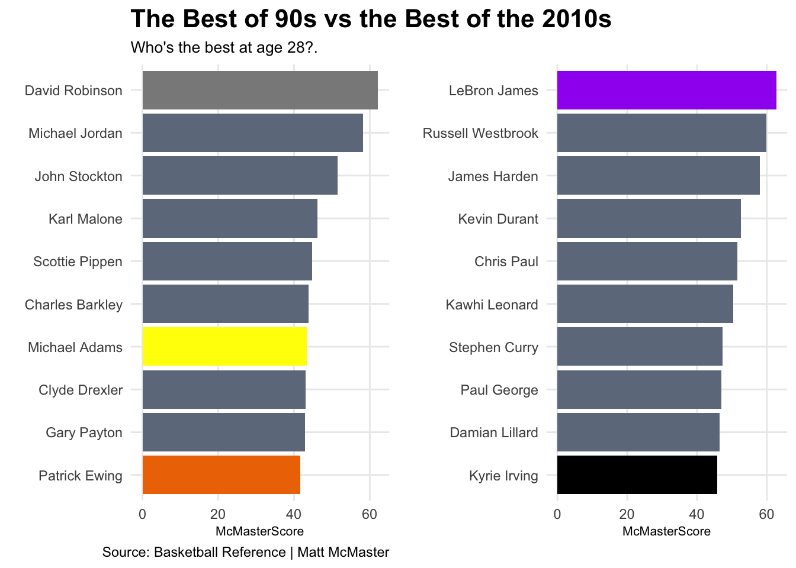

One of the most common term in all of sports is the term “prime”. The word prime represents the best years of a players career. To be at your prime is means to be at your best. The term is also used to evaluate players and their futures. When teams try to decide whether or not to keep an older player or decide to hold onto a young player in hopes that they’ll improve and hit there prime.
A players prime is traditionally considered there late twentys and early thirties and then there is a decline in the late thirties. This understanding has never truly been argued with. But the NBA and there rules have changed that understanding. Back in the 1990s a prospect entering the NBA draft played 3-4 years of college basketball. They were not so much drafted on potentil but drafted on production in college. Rookies were polished products ready expected to produce.
But attitudes and rules have changed. As the NBA style of play has become more skilled and isolation based the importance of potential skyrocketed. Prospects measurables and athletic ability became more important than their college production. Because of this top picks became younger and younger than years before. Below is a heat chart of the age of draft picks over the last 30 years
So the question is has the mass wave of younger players entering the NBA changed when a players prime is?
To find this we’ll compare all players from the seasons 90-99 and 2012-2022. Each player is measured by something called a “McMasterScore”. The McMasterscore is found by this equation, McMasterScore = RBS/G * .05 + AST/G + PPG * TS% - TOV/G *2 + PER + DBPM + VORP. Essentially a McMasterscore values effecient scorers and defensive players. every player has been grouped by there age so each age has its own McMaster Score. By doing this we can find the prime age of NBA players and the different progressions between the 90s and 2010s.
Nineties <- allplayersallmetrics %>%filter(Season <2000& Season >=1990) %>%filter(G >20)TwentyTens <- allplayersallmetrics %>%filter(Season <2022& Season >=2012) %>%filter(G >20)TwentyTens <- allplayersallmetrics %>%filter(Season <2022& Season >=2012) %>%filter(G >20)Nineties <- allplayersallmetrics %>%filter(Season <2000& Season >=1990) %>%filter(G >20)TwentyTensPerG <- TwentyTens %>%mutate(ASTPergame = AST/G) %>%mutate(TOVPergame = TOV/G) %>%mutate(PPG = PTS/G) %>%mutate( RBSPergame = TRB/G)NinetiesPerG <- Nineties %>%mutate(ASTPergame = AST/G) %>%mutate(TOVPergame = TOV/G) %>%mutate(PPG = PTS/G) %>%mutate( RBSPergame = TRB/G) %>%mutate(TS= PTS/2*(FGA + .44* FTA))MMSCORE10s <- TwentyTensPerG %>%mutate(McMasterScore = RBSPergame *.05+ ASTPergame + PPG *`TS%`- TOVPergame *2+ PER + DBPM + VORP) %>%arrange(desc(McMasterScore))MMSCORE90s <-NinetiesPerG %>%mutate (McMasterScore = RBSPergame * .05+ ASTPergame + PPG *`TS%`- TOVPergame *2+ PER + DBPM + VORP) %>%arrange(desc(McMasterScore))MMCharts10 <- MMSCORE10s %>%group_by(Age) %>%summarise(AvgScore =mean(McMasterScore))MMCharts90 <- MMSCORE90s %>%filter(Age >21 ) %>%group_by(Age) %>%summarise(AvgScore =mean(McMasterScore))ggplot() +geom_line(data=MMCharts10, aes(x=Age, y=AvgScore), color="red") +geom_line(data=MMCharts90, aes(x=Age, y=AvgScore), color="blue") +labs(x="Age of Player", y="McMaster Score", title="2010s NBA players prime vs 90s players prime", subtitle="2010s reach their primes quicker and it last longer but their peaks are the exact same", caption="Source: Basketball Reference | Matt McMaster" ) +geom_text(aes(x=21.8, y=20.5, label="2010s rise faster"), color="red") +geom_text(aes(x=28, y=18.5, label="Peak of Primes"), color="blue") +geom_text(aes(x=28, y=17.7, label="are the same age"), color="red") +geom_text(aes(x=35.7, y=20.7, label="90s are better in early 30s"), color="blue") +geom_text(aes(x=42, y=17.5, label="10s have"), color="red") +geom_text(aes(x=41.7, y=16.7, label="more longevity"), color="red") +theme_light() +theme(plot.title =element_text(size=16, face ="bold"), plot.subtitle =element_text(size=10),plot.title.position ="plot",axis.title =element_text(size=18),panel.grid.minor =element_blank() )
Code
top10MS10 <- MMSCORE10s %>%filter(Age ==28) %>%arrange(desc(McMasterScore)) %>%top_n(10, wt=McMasterScore)top10MS90 <- MMSCORE90s %>%filter(Age ==28) %>%arrange(desc(McMasterScore)) %>%top_n(10, wt=McMasterScore)Chart10 <-ggplot() +geom_bar(data=top10MS10, aes(x=reorder(Player, McMasterScore), weight=McMasterScore)) +coord_flip()LBJ <- top10MS10 %>%filter(Player =="LeBron James")DR <- top10MS90 %>%filter(Player =="David Robinson")MA <- top10MS90 %>%filter(Player =="Michael Adams")PE <- top10MS90 %>%filter(Player =="Patrick Ewing")KI <- top10MS10 %>%filter(Player =="Kyrie Irving")Chart90 <-ggplot() +geom_bar(data=top10MS90, aes(x=reorder(Player, McMasterScore), weight=McMasterScore), fill ="lightsteelblue4") +geom_bar(data=DR, aes(x=reorder(Player, McMasterScore), weight=McMasterScore),fill="Gray54") +geom_bar(data=MA, aes(x=reorder(Player, McMasterScore), weight=McMasterScore), fill ="Yellow")+geom_bar(data=PE, aes(x=reorder(Player, McMasterScore), weight=McMasterScore),fill="DarkOrange2") +coord_flip() +labs(title="The Best players in their prime from 90s and 2010s", subtitle ="Theres not much difference between them.", x="", y="Percent change", caption ="") +theme_minimal() +theme(plot.title =element_text(size =16, face ="bold"),axis.title =element_text(size =8), plot.subtitle =element_text(size=10), panel.grid.minor =element_blank() )Chart10 <-ggplot() +geom_bar(data=top10MS10, aes(x=reorder(Player, McMasterScore), weight=McMasterScore), fill ="lightsteelblue4") +geom_bar(data=LBJ, aes(x=reorder(Player, McMasterScore), weight=McMasterScore), fill ="Purple") +geom_bar(data=KI, aes(x=reorder(Player, McMasterScore), weight=McMasterScore), fill ="Black") +coord_flip() +labs(title="", subtitle ="", x="", y="", caption ="") +theme_minimal() +theme(plot.title =element_text(size =16, face ="bold"),axis.title =element_text(size =8), plot.subtitle =element_text(size=10), panel.grid.minor =element_blank() )plot_grid(Chart90, Chart10)

Lebron James are the best players
the average of the best players from the 90s is blank. The best players from the 10s average blank. The best players of each decade
So lets looks at how the 22 year-old performed at their age 22 season. What we are looking for here is the use of rookied and how did it effect there McMaster score
Code
RookChart10 <- MMSCORE10s %>%filter(Age ==22) RookChart90 <- MMSCORE90s %>%filter(Age ==22) ggplot() +geom_point(data=RookChart10, aes(x=MP, y=McMasterScore),color ="Red") +geom_point(data=RookChart90, aes(x=MP, y=McMasterScore), color ="Blue") +labs (x="Minutes played", y="McMaster Score", title="Rookies vs Rookies", subtitle="Despite having more years of more experience 10s aren't to much better", caption="Source: Basketball Reference | Matt McMaster" ) +geom_text(aes(x=750, y=-2, label="low minute 90s rookie cluster"), color="black") +geom_text(aes(x=1500, y=45, label="More 10s outliers"), color="black") +geom_text(aes(x=2700, y=5, label="But Best 10s = Best 90s"), color="black") +geom_text(aes(x=0, y=50, label="90s = Blue"), color="black") +geom_text(aes(x=0, y=45, label="2010s = Red"), color="black") +theme_light() +theme(plot.title =element_text(size=16, face ="bold"), plot.subtitle =element_text(size=10),plot.title.position ="plot",axis.title =element_text(size=18),panel.grid.minor =element_blank() )
Clearly there is a cluster of 90s players at the bottom